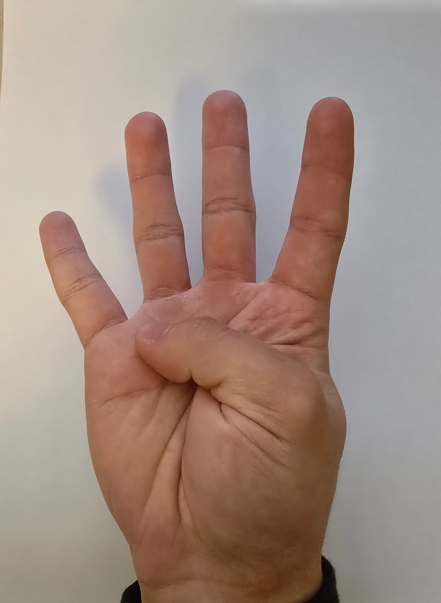

ESP32 Gesture Viewer
Reads serial text from your ESP32 and displays the matching gesture image and probability.
Connect Serial
Connect BLE
Disconnect
Run Demo

Waiting for data...
Probability:
0%
Status: Not connected
Image file mapping
Gesture 1
Gesture 2
Gesture 3
Gesture 4
Base
Expected incoming serial line examples:
gesture 1 probability 90%
gesture 3 probability 42%
The parser is forgiving and will also work with lines like:
Gesture 4 Probability: 77%
Put your image files in the same folder as this HTML file, or change the filenames above to match your actual image names.
Serial log will appear here...